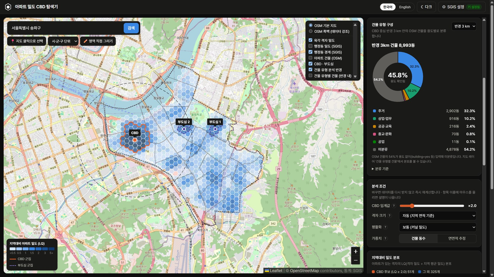
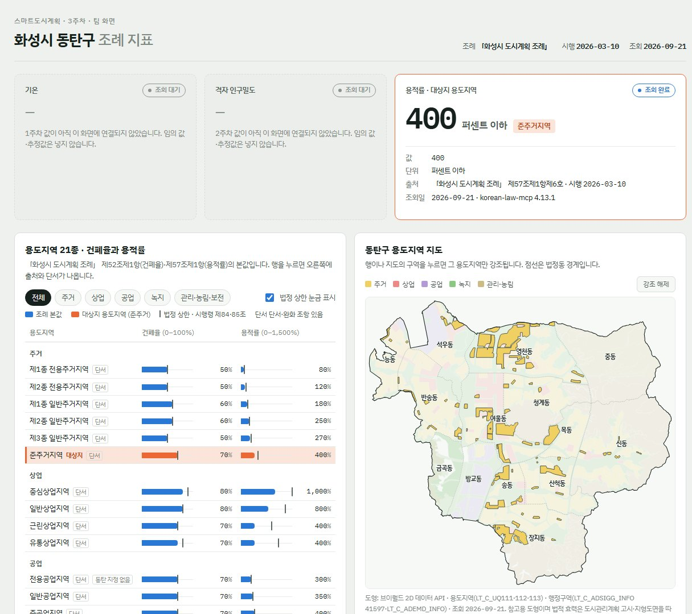

Dongtan
Ordinance
조례가 땅에 허락하는 밀도를 한 화면에. 「화성시 도시계획 조례」의 용도지역 21종 건폐율·용적률을 조문 출처와 함께 표와 지도로 보여 주는 화성시 동탄구 조례 지표판.
아파트 밀도
CBD 탐색기
행정 경계가 아니라 건물 단위 데이터를 격자로 다시 집계해, 경계에 얽매이지 않은 밀집 권역을 직접 탐색하게 만든 도구입니다.
Why
“도시의 중심은 어디인가”를 판단할 때 기존 통계는 행정동 단위로 끊겨, 실제 밀집 권역의 모양을 보여 주지 못합니다. 건물 하나하나를 격자로 다시 집계하면 경계와 무관한 진짜 덩어리가 드러납니다. 그 가설을 직접 확인해 보려고 만들었습니다.
How — 분석 절차
- 지역 지정검색 · 지도 클릭 역지오코딩 · 영역 직접 그리기 (3가지 방식)
- 아파트 수집Overpass API로
building=apartments를 받아 영역 내부만 선별 - 격자 밀도육각 격자로 분할하고 가우시안 커널로 밀도 평활화
- 지역대비 밀도(LQ)격자 밀도 ÷ 지역 평균 밀도 — LQ 2.0은 평균의 2배
- 군집화임계값 이상 격자를 Union-Find로 인접 결합
- 선정규모(밀도×면적)가 가장 큰 군집이 CBD, 다음이 부도심
Features
- 실시간 재계산 — 임계값·격자 크기·평활화·가중치를 바꾸면 네트워크 재요청 없이 즉시 다시 그립니다.
- 건물 유형 구성 — CBD 중심 반경 1·2·3·5 km 안의 모든 건물을 주거/상업·업무/공공·교육/종교·문화/공업으로 분류해 도넛 차트로 제시합니다.
- 행정동 비교 — SGIS 주택총조사 아파트 수로 행정동별 밀도를 비교하는 차트·표·지도 레이어.
- 자체 SVG 차트 — 히스토그램·군집 막대·도넛을 차트 라이브러리 없이 직접 구현했습니다.
- 한국어 / 영어 · 라이트 / 다크 — 사전 기반 i18n, 지도 색상은 UI 테마가 아닌 지도 바탕색을 따르도록 분리.
Engineering
- 공용 Overpass 서버 대응 —
overpass-api.de가 슬롯이 비어도 요청의 절반가량을 504로 거절하는 것을 실측 확인해, 응답이 안정적인 미러를 기본값으로 전환. 실패 시 엔드포인트 폴백 → 슬롯 대기 → 재시도 순으로 복구하고 최근 6건을 캐시합니다. - 대용량 공간 연산 — 건물–격자 매칭과 커널 합산에 공간 해시를 써서 전수 비교를 제거했습니다. 격자가 7,000개를 넘으면 크기를 자동 확대하고, 2,500 km²를 넘는 영역은 사전 차단합니다.
- 좌표계 변환 — SGIS가 UTM-K로 내려주는 행정동 경계를 proj4js로 브라우저에서 WGS84로 변환합니다.
- 이용 정책 준수 — Nominatim 초당 1회 제한을 지키는 요청 큐, API 키는 서버 없이 브라우저 localStorage에만 저장.
Result — 서울 송파구 분석 예시
육각 격자 655개(한 변 141 m)로 재집계한 결과, 지역 평균의 2배를 넘는 격자 51개가 7개 군집으로 묶였고 그중 가장 큰 덩어리가 잠실본동 일대로 선정되었습니다.
- CBD · 지역 평균 대비
- ×6.3
- 분석 면적
- 33.8km²
- 아파트 건물 (OSM)
- 2,514동
- 지역 평균 밀도
- 74.4동/km²
- CBD 면적
- 1.66km²
- CBD 아파트 비율
- 32.4%
- SGIS 아파트 주택
- 134,651호
- 육각 격자
- 655개 · 141 m
영역의 4.9%에 불과한 CBD 군집이 아파트의 32.4%를 품고 있고, 가장 진한 격자는 지역 평균의 17.6배였습니다.
중심지 군집 — CBD · 부도심
막대 = 지역 전체 아파트 중 군집이 차지하는 비율. 규모가 CBD의 5% 미만인 작은 군집 4개는 생략했습니다.
CBD 반경 3 km 건물 구성 — 8,993동
한국 OSM은 용도 없이 building=yes만 입력된 건물이 많아 미분류가 54.2%를 차지합니다. 용도가 확인된 45.8% 안에서는 주거가 압도적입니다.
행정동별 지역대비 밀도 (SGIS 2024)
전체 27개 행정동 중 상위 6개. OSM 건물 기반 분석이 고른 CBD(잠실본동)가 독립 데이터인 SGIS 주택총조사에서도 1위로 나와, 두 출처가 서로를 검증합니다.
유의점
여기서의 CBD는 전통적 업무지구가 아니라 아파트 밀집 핵심 권역을 뜻합니다. OSM 건물 입력이 부족한 지역은 결과가 치우칠 수 있어 SGIS 통계와 함께 해석해야 하며, 연면적은 건물 외곽 사각형의 75%로 근사한 추정치입니다.

화성시 동탄구
조례 지표판
조례 문서 속 숫자를 대상지 기준으로 꺼내, 값마다 출처 조문·시행일·조회일을 붙여 한 화면에서 확인하게 만든 지표판입니다.
Why
건폐율·용적률은 조례 조문 속 표로만 있어서, 대상지에 어떤 값이 적용되는지, 법정 상한과 얼마나 차이 나는지를 바로 보기 어렵습니다. 숫자를 근거째로 믿을 수 있게 — 값마다 출처 조문과 시행일·조회일을 붙여 보여 주는 것이 목표였습니다.
How — 작업 과정
- 사전 조사천안시 조례의 2003년 판과 현행 판을 조문 단위로 비교하며 용도지역·지구·구역 체계를 정리
- 조문 수집korean-law-mcp로 「화성시 도시계획 조례」 제52조(건폐율)·제57조(용적률)를 받음
- 원문 대조국가법령정보 Open API(law.go.kr) 원문과 42개 값을 전부 대조해 일치 확인
- 데이터 정리용도지역 21종 CSV — 값·단위·출처 조문·시행일·조회일·단서 조항
- 지도브이월드 용도지역 도형을 동탄구 경계로 자르고, 다른 시 경계 조각·미세분 관리지역은 집계에서 제외
- 배포·점검Vercel 자동 배포, 커밋 이력 전체에서 인증키 포함 여부 점검(0건)
Features
- 용적률 카드 — 대상지(준주거지역)의 400%를 단위·출처 조문·시행일·조회일과 함께 표시. 아직 연결하지 않은 지표(기온·인구밀도)는 임의 값을 넣지 않고 '조회 대기'로 둡니다.
- 21종 표 — 건폐율(0–100%)·용적률(0–1,500%) 막대에 시행령 법정 상한 눈금을 겹치고, 주거·상업·공업·녹지·관리 필터와 단서·완화 조항 표시를 달았습니다.
- 연동 지도 — 표의 행이나 지도의 구역을 누르면 그 용도지역만 강조됩니다.
- 대상지 상세 — 준주거지역의 건폐율·용적률을 법정 상한 대비 비율과 함께 보여 줍니다.
Engineering
- 값의 근거를 끝까지 — 조문을 MCP 도구로 받은 뒤 law.go.kr 원문과 다시 맞대어, 조례 값 42개가 모두 일치하는 것을 확인했습니다.
- 실행 중 API 호출 없음 — 값과 도형을 미리 받아 페이지에 담아, 인증키 없이 열리고 외부 서비스가 멈춰도 화면이 유지됩니다.
- 키 관리 — 법령·브이월드 인증키는 운영체제 환경 변수에만 두고, 전체 커밋 이력을 검사해 키가 없음을 기록으로 남겼습니다.
- 도형 정리 — 도형 합집합이 구 면적의 99.7%가 되도록 경계 밖 조각과 세분되지 않은 도형을 걸러 냈습니다.
Result — 대상지 준주거지역
- 용적률 · 조례
- 400%
- 건폐율 · 조례
- 70%
- 동탄구 내 지정 면적
- 3.50km²
- 구 면적 대비
- 6.3%
- 용도지역
- 21종
- 대조한 조문 값
- 42개 · 일치
- 도형 합집합 / 구 면적
- 99.7%
- 조례 시행 · 조회
- 03.10· 09.21
과정물 · 결과물
유의점
지도 도형은 참고용입니다. 법적 효력이 있는 경계는 도시관리계획 고시와 지형도면을 따릅니다. 조례 값은 2026-03-10 시행본 기준이며, 2026-09-21에 조회했습니다.

More
Projects
그 밖에 참여한 프로젝트입니다.
전세진
JEON SE JIN
상명대학교 그린스마트시티학과에서 도시 공간과 데이터를 공부하고 있습니다. 공간을 설계하고, 그것을 머물고 싶은 장소로 만드는 일에 관심이 있습니다.

Education
- 2028.03 졸업예정 상명대학교 그린스마트시티학과3학년 재학 중
- 졸업 동산고등학교인천
Military
- 2023.08 – 2025.05 대한민국 공군약 1년 9개월 · 만기 전역
Experience
- 1개월 (주)장원조경 · 인턴조경 실무 경험
Certificates
Interests
함께 만들
장소가 있다면
프로젝트 제안, 인턴·채용, 무엇이든 편하게 연락 주세요.